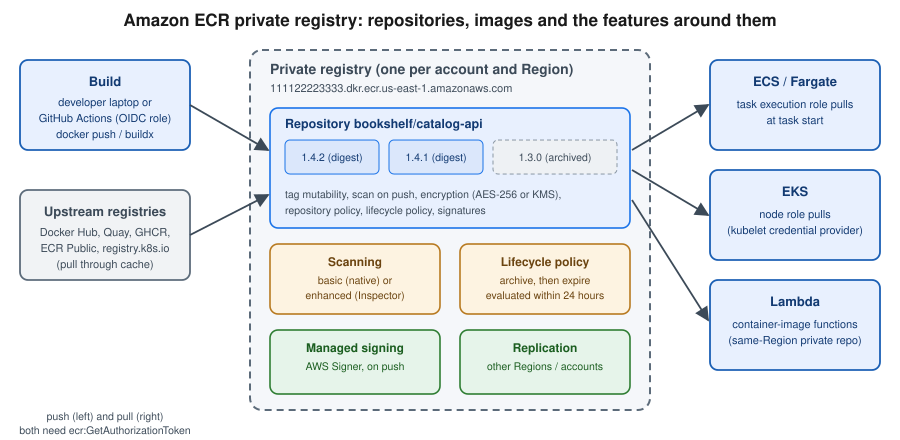

Container Registry
|
This content was generated with the assistance of AI and should be verified against the official documentation before being relied on in production. |
Commands and behaviour below are current for AWS CLI v2 (2.37 line) and the aws-actions/amazon-ecr-login v2 and
aws-actions/configure-aws-credentials v6 actions (checked 2026-10-01). ECR changed quickly in 2025 and 2026 (an
archive storage class, tag-immutability exclusions, managed signing, the end of Clair-based scanning), so re-verify
flags with aws ecr help and the linked reference pages before relying on them in a pipeline.
Every Bookshelf service image is built once and stored in a private Amazon Elastic Container Registry (ECR)
repository: bookshelf/catalog-api, bookshelf/orders-api and bookshelf/notifier. ECS (see
ECS and Fargate), EKS (see EKS Clusters) and container-image Lambda
functions (see AWS Lambda) pull from there using IAM roles, never a registry password. This page
covers the registry side: creating repositories, authenticating and pushing, the repository features that keep the
images safe and cheap (immutability, scanning, lifecycle, signing, replication, pull through cache), and a GitHub
Actions workflow that pushes with a short-lived OIDC role. The Docker mechanics — image layers, tags, registries in
general — are in Registries and Docker Hub and the pipeline mechanics are in
Docker CI/CD with GitHub Actions; the Azure counterpart is
Azure Container Registry.

Registries and repositories
ECR gives each AWS account one private registry per Region, addressed as
<account-id>.dkr.ecr.<region>.amazonaws.com. A registry holds repositories; a repository holds OCI images and
artifacts (including Helm charts, signatures and SBOMs) identified by tag and by digest. Repository names can contain
slashes, so bookshelf/catalog-api is a single repository whose bookshelf/ prefix is a naming convention that
also drives repository creation templates, pull through cache rules and replication filters.
- Private registry
-
Authenticated pull and push, IAM and repository policies, KMS or AES-256 encryption at rest, scanning, lifecycle, replication. This is where Bookshelf images live.
- ECR Public
-
A separate service (
aws ecr-public, authenticated throughus-east-1) for images you want to publish to anyone, served frompublic.ecr.aws. Public repositories have no lifecycle policy, scanning or replication features comparable to the private registry; use them for open-source images, not for Bookshelf.
Two ECR features are worth knowing before you start because older guides do not mention them: images can be moved to a low-cost archive storage class (archived images cannot be pulled until restored), and ECR can create repositories for you on push, through a pull through cache rule or by replication, using repository creation templates that apply your standards (immutability, encryption, policies, lifecycle) to each new repository.
In the AWS Management Console
-
Choose the Region in the navigation bar (
us-east-1here is a placeholder) and open Elastic Container Registry. -
Under Private registry, choose Repositories → Create repository.
-
Leave Repository visibility on Private, enter
bookshelf/catalog-apias the name, set Tag immutability to Immutable, and keep AES-256 encryption (choose AWS KMS if your policy requires a customer managed key; the choice cannot be changed later). -
Choose Create. Select the repository and choose View push commands to see the login, tag and push commands for your account.
With the AWS CLI
export AWS_REGION=us-east-1
export ACCOUNT_ID=$(aws sts get-caller-identity --query Account --output text)
export REGISTRY=$ACCOUNT_ID.dkr.ecr.$AWS_REGION.amazonaws.com
for repo in catalog-api orders-api notifier; do
aws ecr create-repository \
--repository-name bookshelf/$repo \
--image-tag-mutability IMMUTABLE \
--encryption-configuration encryptionType=AES256 \
--region $AWS_REGION
done
aws ecr describe-repositories --query 'repositories[].repositoryUri' --output textDerived from aws ecr create-repository and aws ecr describe-repositories.
Public repositories are created with a different command set, and always through us-east-1:
aws ecr-public create-repository \
--repository-name bookshelf-demo \
--region us-east-1Derived from aws ecr-public create-repository.
Authenticating Docker and pushing images
A registry login is an authorization token that the AWS CLI obtains with your current IAM credentials and that
Docker presents as the password for the fixed user name AWS. The token is valid for 12 hours and is scoped to the
registry, not to one repository; what you can actually do is decided by IAM and repository policies. Older guides
and tutorials still show aws ecr get-login, which was removed in AWS CLI v2; the current command is
aws ecr get-login-password.
In the AWS Management Console
The console does not push images; it shows the commands. Open the repository and choose View push commands, then copy the four commands for your operating system. You can also open AWS CloudShell from the console toolbar, which already has the AWS CLI configured for your signed-in identity.
With the AWS CLI
aws ecr get-login-password --region $AWS_REGION \
| docker login --username AWS --password-stdin $REGISTRY
docker build -t bookshelf/catalog-api:1.4.2 .
docker tag bookshelf/catalog-api:1.4.2 $REGISTRY/bookshelf/catalog-api:1.4.2
docker push $REGISTRY/bookshelf/catalog-api:1.4.2
aws ecr describe-images \
--repository-name bookshelf/catalog-api \
--query 'imageDetails[].[imageTags[0],imageDigest,imageSizeInBytes]' \
--output tableDerived from aws ecr get-login-password and aws ecr describe-images.
Pull the image on another machine the same way (docker pull $REGISTRY/bookshelf/catalog-api:1.4.2). On a
workstation that logs in many times a day, the open-source amazon-ecr-credential-helper lets Docker fetch tokens
on demand instead of storing one in ~/.docker/config.json; Finch and Podman accept the same
get-login-password pipe. For a Spring Boot service, Jib can push straight from Maven or Gradle without a Docker
daemon: after the login above, mvn compile jib:build -Dimage=$REGISTRY/bookshelf/catalog-api:1.4.2 reuses the
Docker credentials.
Derived from the Amazon ECR User Guide — Pushing a Docker image.
Multi-architecture images for Graviton
Graviton (arm64) instances and Fargate ARM tasks are cheaper per unit of work for many Java services, but an image built on an x86 laptop will not start on them. Build a multi-platform image so one tag works on both; ECR stores the resulting image index and the per-platform manifests.
docker buildx build \
--platform linux/amd64,linux/arm64 \
--tag $REGISTRY/bookshelf/catalog-api:1.4.2 \
--push .
aws ecr batch-get-image \
--repository-name bookshelf/catalog-api \
--image-ids imageTag=1.4.2 \
--query 'images[].imageManifest' --output text | head -c 400Derived from the Amazon ECR User Guide — Pushing a multi-architecture image and aws ecr batch-get-image.
Tag immutability
With mutable tags, pushing 1.4.2 twice silently repoints the tag, so the image a deployment pulled yesterday is
not the one it pulls today. With immutable tags, ECR rejects a push to an existing tag with an
ImageTagAlreadyExistsException, which is what you want for release tags. Immutability applies to every tag in the
repository, with one refinement: exclusion filters (wildcards such as latest or dev-*) let a few tags stay
mutable in an otherwise immutable repository, or the reverse (MUTABLE_WITH_EXCLUSION keeps a few tags immutable
in a mutable repository).
Two practical consequences. First, a moving tag such as latest and an immutable repository cannot coexist unless
latest is an exclusion. Second, repositories populated by a pull through cache rule (below) should stay mutable,
because ECR needs to update the cached tag when the upstream tag moves.
In the AWS Management Console
-
Open the repository list, select
bookshelf/catalog-api, then choose Actions → Repository under Edit. -
Set Image tag immutability to Immutable and, if needed, add patterns such as
latestordev-to the *Immutable tag exclusion box. -
Choose Save.
With the AWS CLI
aws ecr put-image-tag-mutability \
--repository-name bookshelf/catalog-api \
--image-tag-mutability IMMUTABLE_WITH_EXCLUSION \
--image-tag-mutability-exclusion-filters filterType=WILDCARD,filter=dev-*Derived from aws ecr put-image-tag-mutability and the Amazon ECR User Guide — Preventing image tags from being overwritten.
Pair immutable tags with a tagging convention that never reuses a tag: the version, the Git commit SHA, or both
(1.4.2, 1.4.2-3f9c2ab). Deployments should reference the digest or an immutable tag; see
Docker CI/CD with GitHub Actions for the workflow side of that rule.
Lifecycle policies and the archive storage class
Without a lifecycle policy, every CI build adds an image that is stored (and billed) forever. A lifecycle policy is a JSON document of prioritised rules; ECR evaluates every rule at once, then applies them in priority order (lower number first), and an image is acted on by at most one rule. Actions run within about 24 hours of an image meeting the criteria, so test a policy with the preview before applying it.
A rule selects images by tagStatus (tagged, untagged or any), optionally by a tagPatternList or
tagPrefixList (a rule may use one or the other, with at most four wildcards per string), and by a countType:
countType |
Meaning |
|---|---|
|
Keep the newest N images; act on older ones. |
|
Act on images pushed more than N days ago. |
|
Act on images not pulled for N days (used with the |
|
Act on images archived for more than N days (used with |
The action is expire (delete) or transition to the archive storage class. Archived images are cheap to keep
but cannot be pulled: a pull returns 404 until the image is restored (about 20 minutes) or pushed again. Archived
images have a minimum storage duration of 90 days, so a lifecycle rule cannot delete them sooner. Archived images
cannot be scanned either; restore them first. Older guides describe only expiry by count or age; archiving is the
newer way to retain release images for compliance without paying standard-storage rates.
The Bookshelf policy below keeps the 20 newest release-tagged images, expires untagged images (typically layers orphaned by a re-push) after a day, and archives everything else not pulled for 90 days:
{
"rules": [
{
"rulePriority": 1,
"description": "Keep the 20 newest release images",
"selection": {
"tagStatus": "tagged",
"tagPatternList": ["[0-9]*"],
"countType": "imageCountMoreThan",
"countNumber": 20
},
"action": { "type": "expire" }
},
{
"rulePriority": 2,
"description": "Expire untagged images after one day",
"selection": {
"tagStatus": "untagged",
"countType": "sinceImagePushed",
"countUnit": "days",
"countNumber": 1
},
"action": { "type": "expire" }
},
{
"rulePriority": 3,
"description": "Archive images not pulled for 90 days",
"selection": {
"tagStatus": "any",
"countType": "sinceImagePulled",
"countUnit": "days",
"countNumber": 90
},
"action": { "type": "transition", "targetStorageClass": "archive" }
}
]
}Adapted from the Amazon ECR User Guide — Examples of lifecycle policies.
In the AWS Management Console
-
Open the repository, then choose Lifecycle Policy in the left pane (under the repository name) → Create rule.
-
For each rule enter the priority, description, image status (tagged, untagged, any), the match criteria and the action (Expire or Archive), then Save.
-
Use Edit test rules → Save and run test to see which images each rule would affect, review the preview, and choose Apply as lifecycle policy.
-
To archive a single image by hand, open it in the repository, choose Archive and confirm; an Archived images tab then appears for the repository.
With the AWS CLI
aws ecr start-lifecycle-policy-preview \
--repository-name bookshelf/catalog-api \
--lifecycle-policy-text file://lifecycle.json
aws ecr get-lifecycle-policy-preview \
--repository-name bookshelf/catalog-api \
--query 'previewResults[].[imageTags,action.type]' --output table
aws ecr put-lifecycle-policy \
--repository-name bookshelf/catalog-api \
--lifecycle-policy-text file://lifecycle.json
# archive and restore one image by hand
aws ecr update-image-storage-class \
--repository-name bookshelf/catalog-api \
--image-id imageTag=1.3.0 \
--target-storage-class ARCHIVE
aws ecr update-image-storage-class \
--repository-name bookshelf/catalog-api \
--image-id imageTag=1.3.0 \
--target-storage-class STANDARDDerived from aws ecr start-lifecycle-policy-preview, aws ecr get-lifecycle-policy-preview, aws ecr put-lifecycle-policy and aws ecr update-image-storage-class; background in the Amazon ECR User Guide — Lifecycle policies and Archiving an image.
Two details bite in practice. Signatures and other reference artifacts attached to an image count against the images-per-repository quota and are cleaned up by lifecycle policies within 24 hours of the image they refer to being deleted or archived. And an image that is part of a multi-architecture image index cannot be expired or archived until the index itself is.
Image scanning
ECR offers two scan types, set at the private-registry level so that one setting covers every repository:
- Basic scanning
-
Operating-system packages are checked against the CVE database with AWS-native scanning, on push or manually. Clair-based basic scanning was deprecated and all accounts were moved to the AWS-native implementation on 2026-02-02, so older guides that mention Clair, or read results from
imageScanFindingsSummaryindescribe-images, are out of date: read results withdescribe-image-scan-findings. - Enhanced scanning
-
An integration with Amazon Inspector that scans both operating-system and programming-language packages (for Bookshelf, the Maven dependencies baked into the Spring Boot image), on push and continuously as new vulnerabilities are published, and emits findings to EventBridge. ECR adds no charge for it but Amazon Inspector does. Switching between the two types makes earlier results unavailable until you switch back.
For an application that ships Java libraries, enhanced scanning is the useful one; basic scanning is a free
baseline. Manual scans are not available with enhanced scanning, and images pushed more than 14 days before
enhanced scanning was first enabled show SCAN_ELIGIBILITY_EXPIRED until they are pushed again.
In the AWS Management Console
-
Open Private registry → Features & settings → Scanning and choose Edit.
-
Choose Enhanced scanning (Inspector is enabled for you) or Basic scanning.
-
Add a filter such as
bookshelf/and choose *Scan on push (basic or enhanced) or Continuous scan (enhanced only), then Save. -
Open an image in a repository to see its findings and severity counts.
With the AWS CLI
aws ecr put-registry-scanning-configuration \
--scan-type ENHANCED \
--rules '[{"scanFrequency":"CONTINUOUS_SCAN","repositoryFilters":[{"filter":"bookshelf/*","filterType":"WILDCARD"}]}]'
aws ecr describe-image-scan-findings \
--repository-name bookshelf/catalog-api \
--image-id imageTag=1.4.2 \
--query 'imageScanFindings.findingSeverityCounts'Derived from aws ecr put-registry-scanning-configuration and aws ecr describe-image-scan-findings; background in the Amazon ECR User Guide — Scan images for software vulnerabilities.
Use --scan-type BASIC with SCAN_ON_PUSH rules for the free option. Scanning is a signal, not a gate: to block a
release on findings, have the pipeline call describe-image-scan-findings (or consume the Inspector EventBridge
event) and fail the job. The general practice of scanning and slimming images is in
Image Best Practices and Supply-Chain Security.
Image signing
Managed signing signs images automatically as they are pushed, using an AWS Signer signing profile, so you do not
install or script the Notation CLI in every pipeline. You create a registry-level signing configuration of up to 10
rules, each pairing a signing profile with repository name filters. The identity pushing the image needs
signer:SignPayload on the profile in addition to the ECR push actions, signing profiles must be in the registry’s
Region (they may belong to another account), and signatures are stored in the repository and count toward its image
quota. Manual signing with Notation and the AWS Signer plugin remains available for signing outside the push
flow; verification still uses Notation.
In the AWS Management Console
-
Open Private registry → Features & settings → Managed signing → Create rule.
-
Create a new AWS Signer profile (name and signature validity period), choose Next, enter a repository name filter such as
bookshelf/, and choose *Save.
With the AWS CLI
cat > signing-config.json <<EOF
{
"rules": [
{
"signingProfileArn": "arn:aws:signer:$AWS_REGION:$ACCOUNT_ID:/signing-profiles/bookshelf_images",
"repositoryFilters": [ { "filter": "bookshelf/*", "filterType": "WILDCARD_MATCH" } ]
}
]
}
EOF
aws ecr put-signing-configuration --signing-configuration file://signing-config.json
aws ecr describe-image-signing-status \
--repository-name bookshelf/catalog-api \
--image-id imageTag=1.4.2Replication and pull through cache
Replication
Replication copies images pushed to a repository into other Regions, other accounts, or both, for lower pull
latency and disaster recovery. Configure it once on the source registry (up to 25 rules, 25 unique destinations);
only content pushed or restored after the rule exists is replicated, repository names stay the same, the copy
happens once per push (no chaining), and most images arrive within 30 minutes. Replication never deletes or
archives, and repository policies, lifecycle policies and settings are not replicated unless a repository creation
template with the REPLICATION purpose supplies them in the destination. For a cross-account destination, only the
destination needs a registry permissions policy allowing ecr:ReplicateImage and ecr:CreateRepository for the
source account.
cat > replication.json <<EOF
{
"rules": [
{
"destinations": [ { "region": "eu-west-1", "registryId": "$ACCOUNT_ID" } ],
"repositoryFilters": [ { "filter": "bookshelf/", "filterType": "PREFIX_MATCH" } ]
}
]
}
EOF
aws ecr put-replication-configuration --replication-configuration file://replication.jsonDerived from aws ecr put-replication-configuration and the Amazon ECR User Guide — Private image replication. In the console, use Private registry → Features & settings → Replication → Edit.
Pull through cache
A pull through cache rule maps a repository prefix in your registry to an upstream registry. The first pull of
docker-hub/library/eclipse-temurin:25-jre through your registry host makes ECR create the repository and copy the
image, and later pulls are served from ECR (ECR rechecks the upstream tag at most once every 24 hours). This keeps
base images available when Docker Hub is rate limiting or down, and lets ECR scan and replicate them like any other
repository.
Upstreams that need no credentials are Amazon ECR Public, the Kubernetes registry and Quay. Docker Hub, GitHub
Container Registry, GitLab Container Registry, Azure Container Registry and Chainguard need credentials stored in a
Secrets Manager secret whose name starts with ecr-pullthroughcache/ and which lives in the same account and Region
(see Secrets Manager, Parameter Store and KMS). Another ECR registry can also be an upstream.
aws secretsmanager create-secret \
--name ecr-pullthroughcache/docker-hub \
--secret-string '{"username":"<docker-hub-user>","accessToken":"<docker-hub-access-token>"}'
aws ecr create-pull-through-cache-rule \
--ecr-repository-prefix docker-hub \
--upstream-registry-url registry-1.docker.io \
--credential-arn arn:aws:secretsmanager:$AWS_REGION:$ACCOUNT_ID:secret:ecr-pullthroughcache/docker-hub-AbCdEf
docker pull $REGISTRY/docker-hub/library/eclipse-temurin:25-jreDerived from aws ecr create-pull-through-cache-rule and the Amazon ECR User Guide — Sync an upstream registry. In the console use Private registry → Features & settings → Pull through cache → Add rule. Limits worth knowing: 50 rules per registry, the first pull may need a route to the internet (even with interface endpoints), Lambda cannot pull container images through a pull through cache rule, and pushing directly into a cache repository is unsupported.
Repository creation templates and create on push
Repositories that ECR creates for you start with default settings (mutable tags, AES-256, no policies) unless a
repository creation template matches their name. A template has a prefix (ROOT matches everything not covered
by a longer prefix), one or more purposes (PULL_THROUGH_CACHE, CREATE_ON_PUSH, REPLICATION), and the settings
to apply: tag mutability, encryption, repository policy, lifecycle policy and resource tags. A template that sets
tags or a KMS key also needs a repository creation role. With a CREATE_ON_PUSH template, docker push to a
repository that does not exist yet creates it with those standards; without a matching template the push fails.
aws ecr create-repository-creation-template \
--prefix bookshelf \
--applied-for CREATE_ON_PUSH REPLICATION \
--image-tag-mutability IMMUTABLE \
--lifecycle-policy file://lifecycle.jsonDerived from aws ecr create-repository-creation-template and the Amazon ECR User Guide — Repository creation templates. In the console, open Private registry → Features & settings → Repository creation templates.
Access control
Two layers decide whether a call succeeds. Identity-based IAM policies on the caller control what a user or role
may do; repository policies (resource-based) attached to a repository control which principals, including other
accounts, may use it. Within one account either layer is enough; across accounts both must allow. Everything starts
with ecr:GetAuthorizationToken, which has no resource-level scope and must be allowed on *. The caller identities
in the Bookshelf pipeline are the CI role (push) and the compute roles (pull). The push policy below is limited to
the bookshelf/ repositories:
{
"Version": "2012-10-17",
"Statement": [
{
"Sid": "AuthToken",
"Effect": "Allow",
"Action": "ecr:GetAuthorizationToken",
"Resource": "*"
},
{
"Sid": "PushPullBookshelfImages",
"Effect": "Allow",
"Action": [
"ecr:BatchCheckLayerAvailability",
"ecr:BatchGetImage",
"ecr:GetDownloadUrlForLayer",
"ecr:InitiateLayerUpload",
"ecr:UploadLayerPart",
"ecr:CompleteLayerUpload",
"ecr:PutImage",
"ecr:DescribeImages",
"ecr:DescribeImageScanFindings"
],
"Resource": "arn:aws:ecr:us-east-1:111122223333:repository/bookshelf/*"
}
]
}Derived from the Amazon ECR User Guide — Identity-based policy examples.
Pull-only identities need just ecr:GetAuthorizationToken, ecr:BatchGetImage, ecr:GetDownloadUrlForLayer (and
ecr:BatchCheckLayerAvailability). For each Bookshelf consumer:
| Consumer | How it gets pull access |
|---|---|
ECS on Fargate |
The task execution role (not the task role) pulls the image at task start; the AWS managed
|
EKS |
The node IAM role carries the |
Lambda container image |
The image must be in a private ECR repository in the same Region; the deploying principal needs ECR read access, and for a repository in another account the repository policy must allow the Lambda service principal. See AWS Lambda. |
EC2 |
An instance profile with the same pull actions; see Amazon EC2 and Auto Scaling. |
To let another account pull Bookshelf images (for example a separate production account), attach a repository policy that names that account:
cat > repo-policy.json <<EOF
{
"Version": "2012-10-17",
"Statement": [{
"Sid": "AllowProdAccountPull",
"Effect": "Allow",
"Principal": { "AWS": "arn:aws:iam::<prod-account-id>:root" },
"Action": [
"ecr:BatchGetImage",
"ecr:GetDownloadUrlForLayer",
"ecr:BatchCheckLayerAvailability"
]
}]
}
EOF
aws ecr set-repository-policy \
--repository-name bookshelf/catalog-api \
--policy-text file://repo-policy.jsonDerived from aws ecr set-repository-policy and the Amazon ECR User Guide — Repository policy examples. In the console, use the repository’s Permissions tab → Edit policy JSON. The caller’s account administrator must still grant the same actions on its side; see Identity and Access for how the two policy types combine.
Networking
ECR traffic goes to the api.ecr and dkr.ecr endpoints and image layers are served from Amazon S3. A workload in a
private subnet with no route to the internet therefore needs three VPC endpoints: interface endpoints for
com.amazonaws.<region>.ecr.api and com.amazonaws.<region>.ecr.dkr, and the S3 gateway endpoint (whose policy must
not block the regional ECR layer bucket). Fargate tasks that also write to CloudWatch Logs need that endpoint too.
Endpoints, NAT gateways and their cost trade-offs are covered in VPC Networking; pulling over a
NAT gateway works but bills data processing for every image pull.
Pushing from GitHub Actions with OIDC
A pipeline should never hold an access key. GitHub Actions can exchange its OIDC token for a short-lived role
session; the AWS-side setup (the identity provider and a role trusted for one repository and branch) is in
Identity and Access, and the workflow mechanics are in
Docker CI/CD with GitHub Actions. Attach the push policy from the previous section to that role.
The workflow then needs only the id-token: write permission:
name: catalog-api-image
on:
push:
branches: [main]
permissions:
id-token: write
contents: read
env:
AWS_REGION: us-east-1
jobs:
push:
runs-on: ubuntu-latest
steps:
- uses: actions/checkout@v5
- uses: aws-actions/configure-aws-credentials@v6
with:
role-to-assume: arn:aws:iam::111122223333:role/bookshelf-github-actions-deploy
aws-region: ${{ env.AWS_REGION }}
- id: ecr
uses: aws-actions/amazon-ecr-login@v2
- uses: docker/setup-buildx-action@v3
- uses: docker/build-push-action@v6
with:
context: .
push: true
platforms: linux/amd64,linux/arm64
tags: ${{ steps.ecr.outputs.registry }}/bookshelf/catalog-api:${{ github.sha }}Derived from the
amazon-ecr-login and
configure-aws-credentials action documentation. The
registry output is the account’s registry host name; set registry-type: public to log in to ECR Public instead.
Pin action versions the way your repository standard requires (the major-version tags above are convenient but
mutable). Using the commit SHA as the tag keeps the repository immutable and traceable to a commit; the follow-up
deployment step (aws ecs update-service or a new task definition revision) is in
ECS Deployments, Scaling and Networking, and the wider CI/CD tooling is in
Developer Tools and DevOps.
Pricing model, limits and monitoring
ECR has no per-repository or per-registry fee. The cost drivers are the amount of image data stored per month (a lower rate for the archive storage class, with a 90-day minimum storage duration), data transferred out of ECR to the internet or across Regions (pulls inside the same Region to compute in the same account are generally free of transfer charges, but NAT gateway data processing is not), and, if enabled, Amazon Inspector charges for enhanced scanning and AWS Signer charges for signing. Lifecycle policies are the main lever: most registries are dominated by old CI images nobody will ever pull again. See the Amazon ECR pricing page for current rates (no prices are repeated here because they change; check it before budgeting).
Default quotas (checked 2026-10-01; most rate quotas are adjustable in Service Quotas):
| Quota | Default |
|---|---|
Repositories per Region |
100,000 |
Images per repository |
100,000 |
Tags per image |
1,000 |
Maximum layer size |
52,000 MiB |
Rules per lifecycle policy |
50 |
Lifecycle policy length |
30,720 characters |
Pull through cache rules per registry |
50 |
Replication rules / unique destinations |
25 / 25 |
|
500 |
|
10 |
|
2,000 |
The table is a subset; the full list is in the
Amazon ECR service quotas page. Many
nodes starting at once (an autoscaling event or a rollout) can reach the pull-rate quotas, which is a good reason to
use pull through cache or a regional replica and to keep image layers small. ECR publishes usage metrics to
CloudWatch under AWS/Usage, and API calls (including lifecycle and signing actions) appear in CloudTrail; set
alarms on the usage metrics as described in the
Amazon ECR usage metrics page and see
Monitoring and Observability.
Recent changes and retired guidance
| Item | Status and current approach |
|---|---|
Clair-based basic scanning |
Deprecated; all accounts moved to AWS-native basic scanning on 2026-02-02. Use enhanced scanning for language packages. |
|
Removed in AWS CLI v2. Use |
Tag mutability |
Exclusion filters ( |
Archive storage class |
New: lifecycle rules can transition images to |
Managed signing |
New: a registry-level signing configuration replaces hand-rolled Notation steps in every pipeline. |
AWS Copilot CLI |
Reached end of support on 2026-06-12. Older guides that let it create repositories and services should be replaced with explicit ECR repositories plus ECS Express Mode or a full ECS service (see ECS and Fargate). |
Long-lived access keys in CI |
Replace with an OIDC role as shown above. |
Troubleshooting
| Symptom | Likely cause | Check |
|---|---|---|
|
The 12-hour token expired, or the login was for another Region or account. |
Re-run |
|
The repository was not created, the name differs, or no |
|
|
Pushing an existing tag to an immutable repository. |
Use a new tag (version or commit SHA) or add an exclusion filter. |
|
The role lacks the action, or a repository policy or SCP denies it. |
Policy simulator; check the repository policy and, for cross-account, both sides. |
ECS task stops with |
Execution role missing pull permission, or no network path to |
Task |
Pod |
The image is archived, the tag was expired by a lifecycle rule, or the node role cannot pull. |
|
Image scan shows |
Unsupported base OS, or the image is outside Inspector’s push-date window. |
Re-push the image; check the Inspector supported-OS list. |
Replication did not copy an image |
Image pushed before the rule existed, missing destination registry policy, or Region not enabled. |
|
Lambda cannot use the image |
Repository in another Region, an unsupported image format, or a pull through cache repository. |
Use a same-Region private repository and a Lambda-supported image format. |
Derived from the Amazon ECR User Guide — Troubleshooting and aws ecr describe-image-replication-status.
Clean up
Repositories and images cost money only while they exist, and a repository that still holds images cannot be deleted
without --force. Delete configuration first, then repositories, in every Region you replicated to:
aws ecr delete-lifecycle-policy --repository-name bookshelf/catalog-api
aws ecr delete-repository-policy --repository-name bookshelf/catalog-api
aws ecr delete-pull-through-cache-rule --ecr-repository-prefix docker-hub
aws secretsmanager delete-secret \
--secret-id ecr-pullthroughcache/docker-hub \
--recovery-window-in-days 7
aws ecr put-replication-configuration --replication-configuration '{"rules":[]}'
aws ecr delete-signing-configuration
aws ecr delete-repository-creation-template --prefix bookshelf
for repo in catalog-api orders-api notifier; do
aws ecr delete-repository --repository-name bookshelf/$repo --force
done
aws ecr delete-repository --repository-name docker-hub/library/eclipse-temurin --force
aws ecr-public delete-repository --repository-name bookshelf-demo --force --region us-east-1Derived from
aws ecr delete-repository,
aws ecr delete-pull-through-cache-rule,
aws ecr delete-signing-configuration,
aws ecr delete-repository-creation-template,
aws ecr-public delete-repository and
aws secretsmanager delete-secret.
In the console, select each repository → Delete and type delete to confirm; remove rules under Private
registry → Features & settings. Delete the replicated repositories in the destination Region as well, switch
enhanced scanning back to basic if you no longer want Inspector charges, and delete the AWS Signer signing profile
(aws signer cancel-signing-profile) if you created one only for testing.
Related pages
-
ECS and Fargate consumes these images in task definitions and services.
-
EKS Clusters and Deploying Microservices on EKS pull them into pods.
-
AWS Lambda covers container-image functions.
-
Identity and Access covers the OIDC role and policy evaluation used above.
-
Infrastructure as Code creates the Bookshelf repositories in the baseline template.
-
Registries and Docker Hub and Docker CI/CD with GitHub Actions cover registries and pipelines in general.
-
Azure Container Registry is the Azure counterpart (Azure Container Registry).